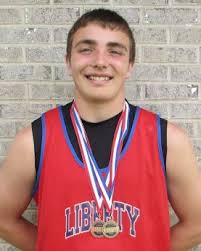
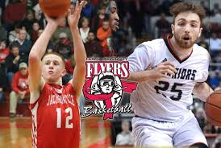
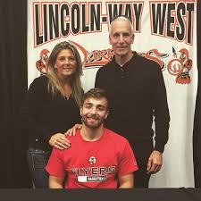

My favorite hobby has been the same for most of my life. I have loved the game of basketball since I was little. It has always served as a place I could go to clear my head and get away from things that were bothering me. I ran with that and a young age and it has become my life.
Basketball has also given me a chance to meet some of my best friends in my life along with some very influential people in my life.
Additionally, it has given my family some life long memories. My parents and I have only grown closer through numerous shared experinces and many long trips and car rides to here, there and everywhere together.
